Introduction¶
In this chapter we create a basic 3D scene and look at useful shortcuts. You will:
build an arch
add light and a sky environment
add a camera
write a script to move the camera with keys
export the game to the web
Create a new project¶
Become familiar with the project manager:
select menu
Project > Quit to Project Listclick on
New Projectclick star ★ to add/remove favorites
use filter 🔎 to restrict choice
create a new folder
select a folder
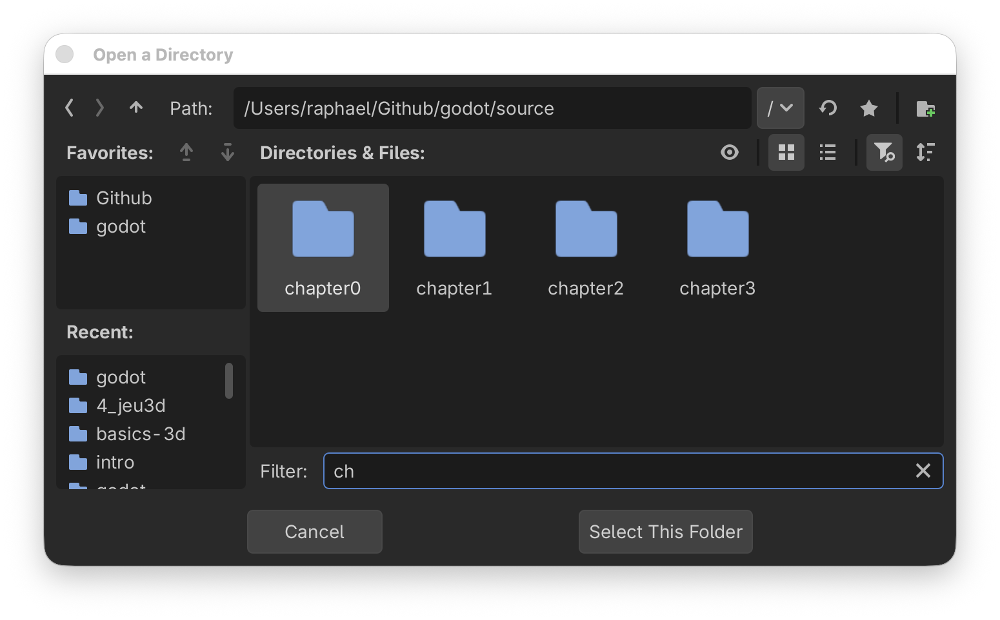
Add nodes¶
Quickly create nodes in the scene tree:
click on
Node3Dto create a root nodepress
enterand rename it toWorlduse
cmd+Ato insert a new nodesearch for
csgb(search for letters in that order)select the
CSGBox3D
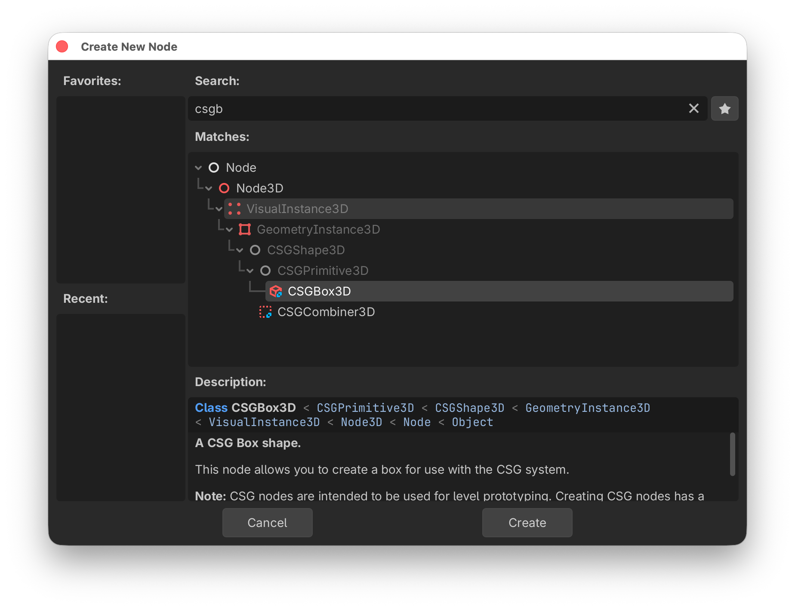
drag the gizmo point (red dot) to create à 9x9 m box
hold
altto change symmetrically
Add more nodes¶
You can add quickly more nodes:
use
cmd+Dto duplicate nodesuse snap (
Y) to lock to the griduse the gizmo (red dots) to size the box
create 2 pillars of height 3 m
add a top bar of 4 m length
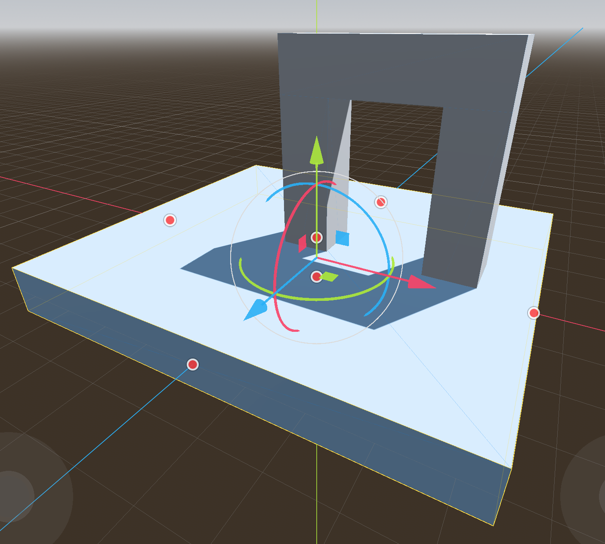
You should now have this scene tree
{kind=link}
Axis gismo¶
With the axis gismo, by clicking on X Y or Z, you can quickly go to
XRight orthogonal viewYTop orthogonal viewZFront orthogonal view
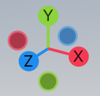
Let’s check our arch in the front view and correct it if necessary.
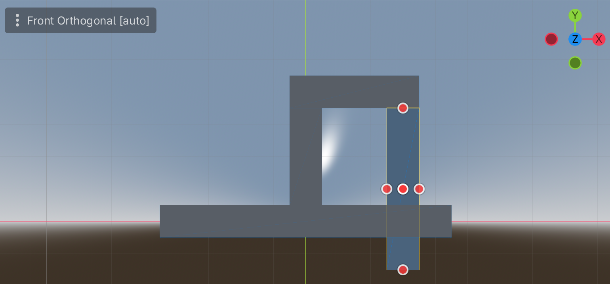
Tools¶
Most of the tools have a very useful 1-key shortcut and they lie in a row (QWERT).
Qmove + rotateWmoveErotateRscaleVselection only (arrow)
The last 5 tools are:
Mmeasuring distance (triangle)Ttoggle global/local frame (box)Ytoggle snap to grid (magnet)toggle light (sun)
toggle world environment (globe)
Moving the view¶
Oplaces the Origin of the axis in the centerFplaces the selected object in the center (Focus)
The mouse allows the user to swivel around that center point of the view
with
Vselect the top archwith mouse x-direction, you can go 360° around the selected object
with mouse y-direction, you can go from -90° (bottom) to 90° (top)
with
alt+ mouse-y you can zoom the camera
Shortcuts in the scene tree editor¶
Here are a few tricks to speed up work with nodes:
cmd+Dto duplicatecmd+Xto cutcmd+Cto copycmd+Vto pasteshift+cmd+Vpaste as a sibling
You can use the direction keys to navigate inside the scene tree.
up/downto move inside the scene treeleft/rightto open/collapse subtreescmd+ up/downto move a node
Fly mode¶
By pressing the shift+F the editor goes into fly mode:
the mouse cursor disappears
the
WSkeys allow to zoom the camera (get closer)the
ADkeys allow to move left-rightthe
QEkeys allow to move up-downthe mouse allows to orient the camera
Hint
Try to fly through the arch.
with
shift+Fyou can quit fly modepressing
shiftmakes it fasterpressing
altmakes it slower
Reparent¶
It is good practice to rename our nodes and group them.
First let’s rename the ground plate to Floor.
The three nodes forming the arch should be grouped. A simple Node3D node would be appropriated.
select the 3 nodes
right-click
select
Reparent to New Node...
{kind=link}
We obtained this tree.
{kind=link}
Now rename the three nodes to something more expressive.
{kind=link}
Play the game¶
When trying to run the project’s main scene (cmd+B) we get the following message.
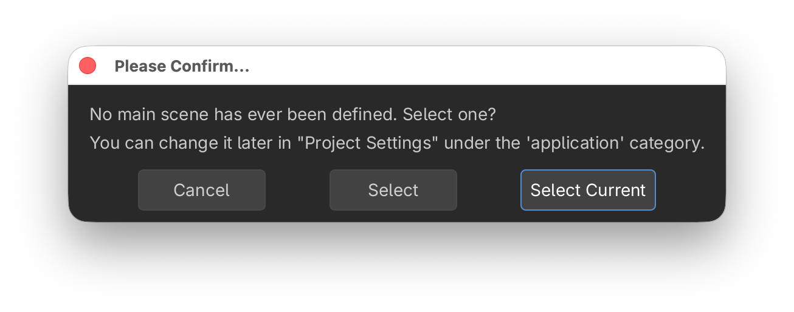
Confirm and save the scene as world.tscn.
Now the scene appears in the file editor.
{kind=link}
However the screen remains black. There is no camera and no light. In the meantime, let’s make the window bigger, in order to display all icons on one line.
go to menu
Project > Project Settings...select
General > Display > Windowset viewport width to 1600
set viewport height to 900
Add a camera¶
select the
Worldnodeadd a
Camera3Dnodeselect the move + rotate gizmo (
Q)pull the camera back 5m (blue arrow, in snap mode)
lift the camera up 2m (green arrow)
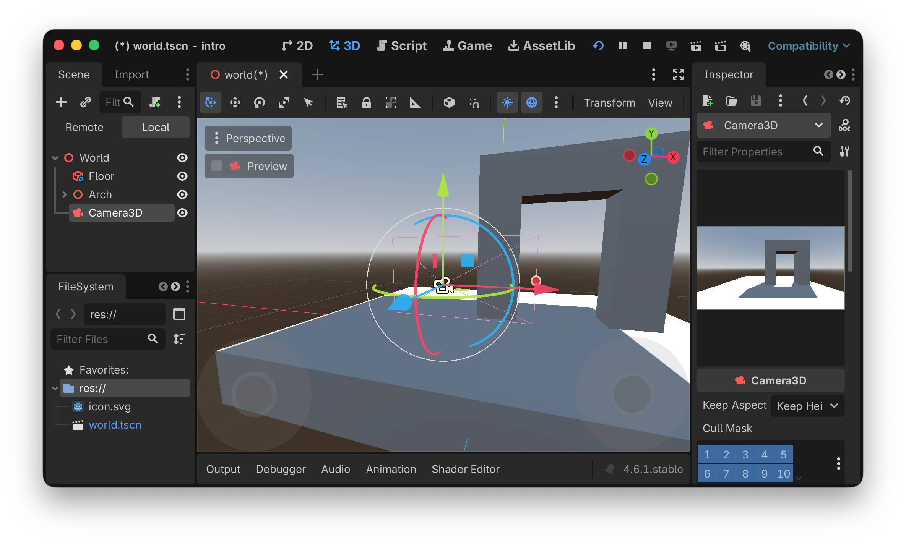
select the camera in the scene tree (left side)
observe the camera view in the inspector (right side)
you can also click the Preview checkbox to see the camera view in the main window
the camera gismo (red dot) allows to change the field of view (FOV)
this can also be set in the inspector. Set it to 70°
Try to run the projects main scene again (cmd+B).
Now we see the arch, but the scene has no light.
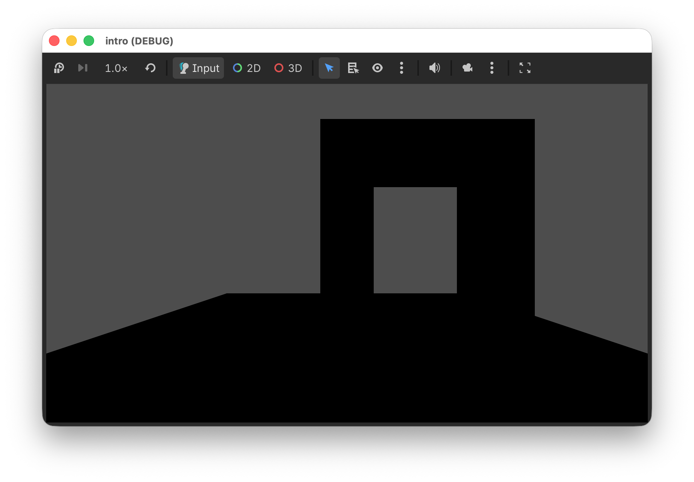
Add light and environment¶
In the editor preview, sunlight and a sky and earth environment is automatically added.
In order to add it to our scene, click the 3 dots, next to the globe symbol.
{kind=link}
click
Add Sun to Sceneclick
Add Environment to Scene
We get this in the scene tree.
{kind=link}
When we run the project main scene again (cmd+B), we now have sun light, a sky and a horizon.
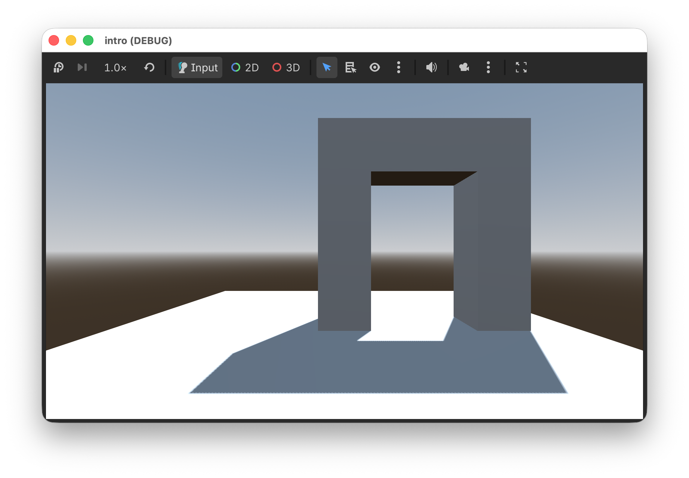
Move the camera¶
Let’s try to create a program which imitates the free-fly behavior we have seen in the editor. First let’s define the 6 input actions.
menu
Project > Project Settings...select
Input Mapadd and configure these 6 actions
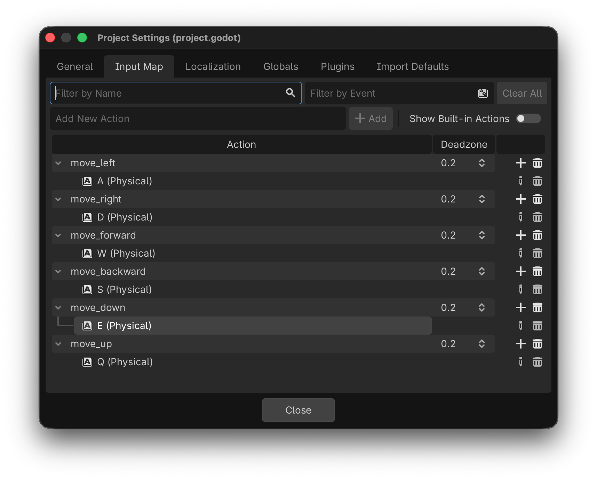
select the
Camera3Dnodeattache a script
save it
Then add this to the _process() function
func _process(delta: float) -> void:
var input = Vector3.ZERO
input.x = Input.get_axis('move_left', 'move_right')
input.y = Input.get_axis('move_down', 'move_up')
input.z = Input.get_axis('move_backward', 'move_forward')
print(input)
This calculates a direction vector based on the 6 input actions. We see something like this in the console.
(-1.0, 0.0, 0.0)
(-1.0, 0.0, 0.0)
(-1.0, 0.0, 0.0)
(-1.0, 0.0, -1.0)
(-1.0, 0.0, -1.0)
(-1.0, 0.0, -1.0)
(0.0, 0.0, -1.0)
(0.0, 0.0, -1.0)
Now we use this value to change the position of the camera.
func _process(delta: float) -> void:
var input = Vector3.ZERO
input.x = Input.get_axis('move_left', 'move_right')
input.y = Input.get_axis('move_down', 'move_up')
input.z = Input.get_axis('move_forward', 'move_backward')
position += basis * input * 0.1
The _process() function is called 60 times per second.
So we multiply the input vector by 0.1 to obtain a speed of 6 m/s.
We also use the basis matrix to rotate the vector in the camera direction.
Finally we add the movement vector to the current position.
Rotate the camera¶
To change the camera rotation, we will use not the mouse, but the direction keys. They already have built-in actions.
we call the camera move direction
dirand initialize it asVector2.ZEROwe use
Input.get_axis()to get the axis value (-1, 1) for two opposing keyswe accumulate the input direction in a global variable
tiltthis value is used to adjust the camera rotation
var dir = Vector2.ZERO
dir.x = Input.get_axis("ui_left", "ui_right")
dir.y = Input.get_axis("ui_down", "ui_up")
if dir:
tilt += dir * 0.05
tilt.y = clamp(-PI/2, tilt.y, PI/2)
basis = Basis()
rotation.y = tilt.x
rotation.x = tilt.y
print(tilt)
The vertical tilt is clampted between -90° and +90°.
Finished program¶
Here we have the finished program.
1extends Camera3D
2
3var tilt = Vector2.ZERO
4
5# Called when the node enters the scene tree for the first time.
6func _ready() -> void:
7 pass
8
9
10# Called every frame. 'delta' is the elapsed time since the previous frame.
11func _process(delta: float) -> void:
12 var input = Vector3.ZERO
13 input.x = Input.get_axis('move_left', 'move_right')
14 input.y = Input.get_axis('move_down', 'move_up')
15 input.z = Input.get_axis('move_forward', 'move_backward')
16 position += basis * input * 0.1
17
18 var dir = Vector2.ZERO
19 dir.x = Input.get_axis("ui_left", "ui_right")
20 dir.y = Input.get_axis("ui_down", "ui_up")
21
22 if dir:
23 tilt += dir * 0.05
24 tilt.y = clamp(-PI/2, tilt.y, PI/2)
25 basis = Basis()
26 rotation.y = tilt.x
27 rotation.x = tilt.y
Web export¶
Go to
Project > ExportAdd
Web
{kind=link}
We can export the project for one or several platforms.
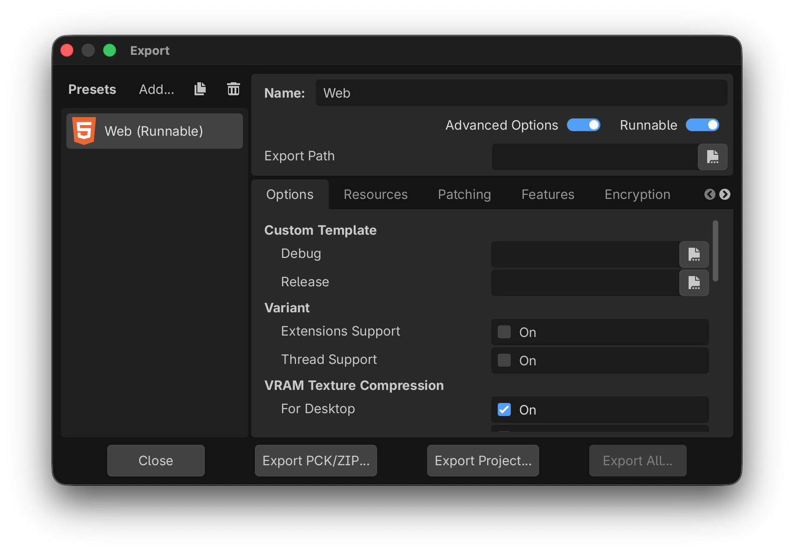
Export the project into a separate folder.
Pack the project as ZIP¶
Finally let’s export the project as a ZIP file. This allows us to distribute the Godot project, so that it can be opend with the Godot editor.
Go to Project > Pack Project as ZIP
{kind=link}
Download the Godot Project.